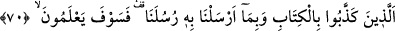
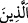
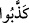
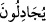

78. Andolsun, senden önce de peygamberler gönderdik. Onlardan sana kıssalarını
anlattığımız kimseler de var, durumlarını sana bildirmediğimiz kimseler de var.
Hiçbir peygamber Allah’ın izni olmaksızın herhangi bir âyeti kendiliğinden
getiremez. Allah’ın emri gelince de hak uygulanır ve o zaman bâtılı seçenler
hüsrana uğrayacaklardır.
“Allah’ın âyetleri hakkında” bunları savuşturup iptâl etme hususunda “tartışanlara
bakmadın mı? Nasıl döndürülüyorlar!” yâni ey Muhammed! Yüce Allah’ın, îman
etmeyi gerektiren ve insanı tartışmaktan alıkoyan şu apaçık âyetleri hakkında cedelleşen
bâtıl taraftarlarına bak! Bak da o fecî durumlarına ve son derece zayıf görüşlerine
hayret et! Kur’an âyetlerine îman ederek onların önündeki tüm engelleri bırakıp onlara
yönelmeyi gerektiren onca güçlü sâik bulunmasına rağmen, bu âyetlere îman ve tasdik
edecekleri yerde nasıl da çevrilip tekzib ediyorlar!?
Allah’ın âyetleriyle cedelleşmenin kötülüğü, bu sûrede tam dört yerde
tekrarlanmaktadır. Bu, ya cedelleşenlerin çokluğundan olabilir ki farklı kavimlerden
farklı kimselerin cedelleşmesiyle gerçekleşir. Veya hakkında cedelleşilen şeyin
çokluğundan olabilir. Bu ise cedelleştikleri âyetlerin farklılığıyla gerçekleşir. Ya da
birbirini pekiştirmek için olabilir.
70. Onlar, Kitab’ı ve peygamberlerimize gönderdiklerimizi yalanlayanlardır.
Onlar yakında (gerçeği) anlayacaklar!
“Onlar
Kitâb’ı”
yâni
Kur’an’ın
tamamını
“ve
peygamberlerimize
gönderdiklerimizi” yâni diğer kitapları “yalanlayanlardır.”
İrşad’da der ki: Âyetin başında yer alan ikinci “
” ism-i mevsûlünün bir önceki
âyetteki “mücâdele” fiiline değil de bu âyette yer alan “tekzib/yalanlama” fiiline
bağlanmasının sebebi şudur: Normalde, cedelleşme bütün ayetlerde değil, belli
maddelerde gerçekleşir; (tekzib ise bütün ayetleri kapsar). “
” fiilinde mâzi sîgası
kullanılması, tekzibin kesin olarak gerçekleştiğini göstermek içindir. Nitekim önceki
sıladaki “
” fiilinde geçen muzâri sîgası da cedelleşmenin ara ara ortaya çıktığını
ve tekerrür ettiğini göstermektedir.
“Onlar yakında (gerçeği) anlayacaklar:” yâni işledikleri cedelleşme ve tekzip
eylemlerinin künhüne bunların cezâsını müşâhede ettiklerinde vâkıf olacaklardır. Bu
cümle, tehdid amacıyla getirilmiş yeni bir cümledir.